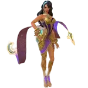

Dominando o Novo Phoveus em Mobile Legends Bang Bang (2024)
Phoveus passou por uma reformulação significativa, trazendo novas dinâmicas para sua jogabilidade em Mobile Legends: Bang Bang. Este guia fornecerá uma análise detalhada das habilidades reformuladas de Phoveus, oferecerá dicas estratégicas para utilizá-las em batalhas, discutirá seus pontos fortes e fracos contra outros heróis e sugerirá builds e emblemas ideais para maximizar seu potencial.
I. Entendendo as Habilidades Reformuladas de Phoveus
A reformulação de Phoveus redefiniu seu papel no jogo, focando mais em punir inimigos que dependem de mobilidade. Suas habilidades agora têm melhor sinergia e oferecem maiores opções táticas. Aqui está uma análise de cada habilidade e como usá-las de forma eficaz:
1. Habilidade Passiva: Força Demoníaca
Efeito: O próximo Ataque Básico de Phoveus permite que ele avance em direção ao inimigo, empurrando-o para trás, causando Dano Mágico adicional igual a 4% do HP Máximo do inimigo e ganhando um Escudo igual a 8% de seu próprio HP Máximo. O tempo de recarga desse efeito varia de 26 a 14 segundos, dependendo do nível de sua ultimate, Caçada Infernal.
Buff: Sempre que um herói inimigo piscar, avançar ou for deslocado a uma distância de 8 unidades de Phoveus, o tempo de recarga de Força Demoníaca é reduzido em 20%, e o tempo de recarga de suas outras habilidades é reduzido em 0,5 segundos.
Dicas Estratégicas:
- Engajamento Tático: Use Força Demoníaca para iniciar lutas ou seguir o controle de grupo (CC) de sua equipe. O empurrão pode atrapalhar a formação inimiga e dar à sua equipe uma vantagem posicional.
- Aproveite a Mobilidade: Como Força Demoníaca se beneficia da mobilidade do inimigo, tente ficar perto de heróis com investidas ou piscadas. Isso permitirá que você use suas habilidades com mais frequência, dando-lhe uma vantagem em combates prolongados.
- Tempo do Escudo: Aplique o Ataque Básico após ativar Força Demoníaca para maximizar a eficácia do escudo, especialmente quando você antecipar dano pesado.
2. Primeira Habilidade: Impacto Demoníaco
Efeito: Phoveus bate seu monólito no chão, causando 200 (+120% do Ataque Físico Total) de Dano Físico aos inimigos na área e reduzindo sua velocidade em 70% por 0,5 segundos. Se essa habilidade acertar um inimigo, o próximo Impacto Demoníaco deixará para trás um Olho de Astaros, que implodirá após um breve atraso, causando 100 (+60% do Ataque Físico Total) de Dano Mágico aos inimigos.

Dicas Estratégicas:
- Controle de Grupo: O efeito de lentidão do Impacto Demoníaco é crucial para controlar os movimentos inimigos. Use-o para garantir abates ou impedir fugas.
- Posicionamento do Olho de Astaros: Se você conseguir acertar um inimigo, o subsequente Olho de Astaros fornecerá dano e controle adicionais. Posicione o olho estrategicamente em áreas de alto tráfego ou onde você espera que o inimigo se mova.
- Combos de Habilidades: Siga com Impacto Demoníaco após outras habilidades de controle de grupo de sua equipe para maximizar sua eficácia. A lentidão dificultará para os inimigos evitarem a explosão retardada do Olho de Astaros.
3. Segunda Habilidade: Onda Sombria
Efeito: Phoveus libera seu poder demoníaco em uma direção alvo, jogando os inimigos ao ar, arrastando-os junto e causando 250 (+100% do Ataque Físico Extra) de Dano Mágico.
Dicas Estratégicas:
- Engajamento e Disrupção: Onda Sombria é uma ferramenta poderosa de iniciação. Use-a para desorganizar as formações inimigas ao jogá-los ao ar, tornando-os vulneráveis a ataques subsequentes de sua equipe.
- Potencial de Combo: Essa habilidade é perfeita para preparar sua ultimate ou outras habilidades. Combine-a com Impacto Demoníaco para uma cadeia devastadora de controle de grupo e dano.
- Utilidade Defensiva: Não hesite em usar Onda Sombria de forma defensiva. Ela pode criar espaço entre você e inimigos que se aproximam ou afastar atacantes de sua retaguarda.
4. Ultimate: Caçada Infernal
Efeito: As habilidades de Phoveus, Força Demoníaca, Olho de Astaros e Onda Sombria podem aplicar a Marca do Pecador aos heróis inimigos. Quando um herói inimigo com a Marca do Pecador está dentro do alcance, Phoveus pode saltar no ar e descer com seu monólito, causando 250 (+100% do Ataque Físico Total) mais Dano Físico adicional igual a 5% do HP Máximo do alvo. Phoveus também recupera 50 mais 6% de seu HP Perdido. A recuperação de HP é reduzida em 80% ao atingir múltiplos inimigos.

Dicas Estratégicas:
- Golpe Finalizador: Use Caçada Infernal para finalizar inimigos com pouca saúde ou invadir a retaguarda durante lutas em equipe. O dano e a recuperação de HP tornam Phoveus uma ameaça formidável em escaramuças.
- O Timing é Essencial: Fique de olho nos inimigos marcados com a Marca do Pecador e sincronize seu salto para obter o máximo de impacto. Lembre-se de que atingir múltiplos inimigos reduz sua cura, então tente focar em heróis isolados para melhores resultados.
- Sustentação nas Lutas: O efeito de cura da Caçada Infernal pode mantê-lo vivo em confrontos prolongados, especialmente em duelos um contra um. Use isso a seu favor, pressionando continuamente seus oponentes.
II. Counters e Sinergias de Phoveus Renovado
1. Phoveus é fraco Contra:

|
Zhask: As invocações de Zhask são imunes às habilidades de Phoveus, tornando muitos de seus ataques ineficazes. Zhask pode pressionar Phoveus constantemente, sobrecarregando-o. |
|

|
Esmeralda: A habilidade de Esmeralda de absorver escudos contraria diretamente a proteção de Phoveus de Força Demoníaca, tornando-a uma adversária difícil. |

|
Alucard: A alta sustentação e mobilidade de Alucard dificultam que Phoveus o supere em combates. |

|
Baxia: As habilidades anti-cura de Baxia reduzem a eficácia de Caçada Infernal de Phoveus, diminuindo sua sustentação nas batalhas. |

|
Gord: O longo alcance e o alto dano explosivo de Gord podem manter Phoveus à distância, explorando sua falta de habilidades de fechamento de lacunas fora de seu ultimate. |

|
Hylos: O ultimate de Hylos pode anular a vantagem de mobilidade de Phoveus, dificultando que ele se engaje ou desengaje de maneira eficaz. |

|
Aulus: Aulus pode superar Phoveus em lutas prolongadas, especialmente com seu dano contínuo e autocura. |

|
Minsitthar: A habilidade King's Calling de Minsitthar pode impedir Phoveus de usar suas habilidades baseadas em mobilidade de forma eficaz. |
2. Forças de Phoveus Contra Heróis Específicos
Phoveus é forte contra:

|
Wanwan: Wanwan depende muito de seus dashs para se reposicionar em lutas, tornando-se um alvo fácil para as habilidades de Phoveus. |

|
Benedetta: Os dashs constantes de Benedetta jogam a favor de Phoveus, permitindo que ele reduza seus tempos de recarga e puna sua mobilidade. |

|
Harith: A dependência de Harith em suas habilidades de piscar o torna vulnerável ao conjunto de habilidades de Phoveus, especialmente em combates prolongados. |

|
Ling: O uso frequente de dashs e piscar por Ling dá a Phoveus várias oportunidades para capitalizar em sua habilidade passiva e ultimate. |

|
Valentina: O conjunto de habilidades de Valentina, que inclui habilidades de piscar, a torna suscetível às habilidades de Phoveus, especialmente se ela tentar enfrentá-lo de frente. |
III. Build Top Global de Phoveus 2024
Bota do Guerreiro
Atributos: +40 Velocidade de Movimento, +18 Defesa Física
Passivo Único - Valor: Ganhe 4 de Defesa Física extra por 3 segundos ao receber Dano Físico, até 20.
Por quê?: As Bota do Guerreiro fornecem velocidade de movimento e defesa física essenciais, tornando Phoveus mais resistente no início do jogo e permitindo que ele se mantenha próximo de seus alvos.

Cinturão do Trovão
Atributos: +800 HP, +15 Defesa Física, +15 Defesa Mágica, +20 Velocidade de Movimento
Passivo Único - Thunderbolt: A cada 4 segundos, o próximo Ataque Básico causa Dano Verdadeiro adicional e retarda brevemente os inimigos.
Por quê?: O Cinturão do Trovão aprimora o Ataque Básico de Phoveus, adicionando dano verdadeiro e um efeito de lentidão significativo que sinergiza bem com sua Força Demoníaca.

Machado de Guerra
Atributos: +35 Ataque Físico, +400 HP, +10% Redução de Tempo de Recarga, +12% Roubo de Vida Mágico
Passivo Único - Espírito de Luta: Ataques concedem Ataque Físico extra e Dano Verdadeiro baseado no número de acumulações.
Por quê?: O Machado de Guerra é essencial para o dano e sustentabilidade de Phoveus, especialmente em combates prolongados, onde ele pode maximizar o efeito passivo.

Armadura de Peito Bruto
Atributos: +600 HP, +23 Defesa Física, +10% Redução de Tempo de Recarga
Passivo Único - Força Bruta: Cada segundo após causar dano, ganha Ataque Adaptativo e Velocidade de Movimento extra.
Por quê?: Este item proporciona um equilíbrio de defesa, redução de tempo de recarga e dano, tornando Phoveus ainda mais durável enquanto melhora sua mobilidade e poder de ataque.

Asas da Rainha
Atributos: +40 Ataque Adaptativo, +600 HP, +10% Redução de Tempo de Recarga, +10% Roubo de Vida Mágico
Passivo Único - Demonizar: Quando o HP cai abaixo de 40%, ganha 30% de Redução de Dano por 3 segundos e reduz os tempos de recarga das habilidades em 2 segundos.
Por quê?: As Asas da Rainha oferecem excelente sobrevivência e sustentação em combates, dando a Phoveus a capacidade de suportar mais dano enquanto desferem golpes poderosos.

Oráculo
Atributos: +20 Defesa Física, +20 Defesa Mágica, +10% Redução de Tempo de Recarga
Passivo Único - Abençoar: Efeitos de Recebimento de Escudo e Regeneração de HP são aumentados em 30%.
Por quê?: O Oráculo sinergiza bem com as habilidades de escudo e cura de Phoveus, melhorando sua sustentação e sobrevivência em lutas de equipe.

IV. Emblemas Top Global para Phoveus em 2024

Emblema Personalizado de Soldado
O Emblema Personalizado de Soldado é a escolha ideal para Phoveus, aprimorando sua durabilidade, dano e sustentação nas batalhas. Abaixo estão os talentos recomendados para otimizar seu desempenho:

Agilidade
Efeito: Ganhe 4% de Velocidade de Movimento extra.
Por quê? Agilidade ajuda Phoveus a se engajar ou desengajar mais efetivamente, facilitando a perseguição de inimigos ou o reposicionamento nas lutas.

Festival de Sangue
Efeito: Ganhe 6% de Roubo de Vida Mágico. Cada abate ou assistência concede 0,5% de Roubo de Vida Mágico adicional, até 8 acúmulos.
Por quê? O Festival de Sangue melhora significativamente a sustentação de Phoveus, permitindo que ele se cure mais com suas habilidades, especialmente em lutas prolongadas.

Golpe de Bravura
Efeito: Causar dano de habilidade a um herói inimigo recupera 5% do HP Máximo. Tempo de recarga: 6 segundos.
Por quê? Golpe de Bravura proporciona cura adicional, garantindo que Phoveus possa manter sua presença na luta e absorver mais dano.

 Guia de Dyrroth MLBB
Guia de Dyrroth MLBB